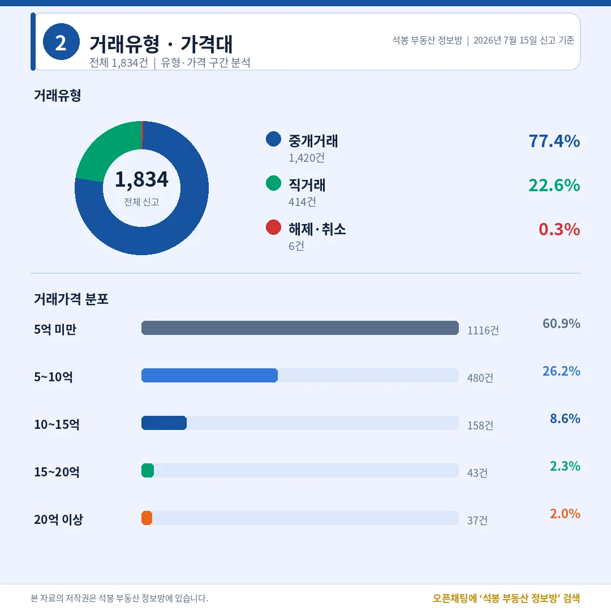
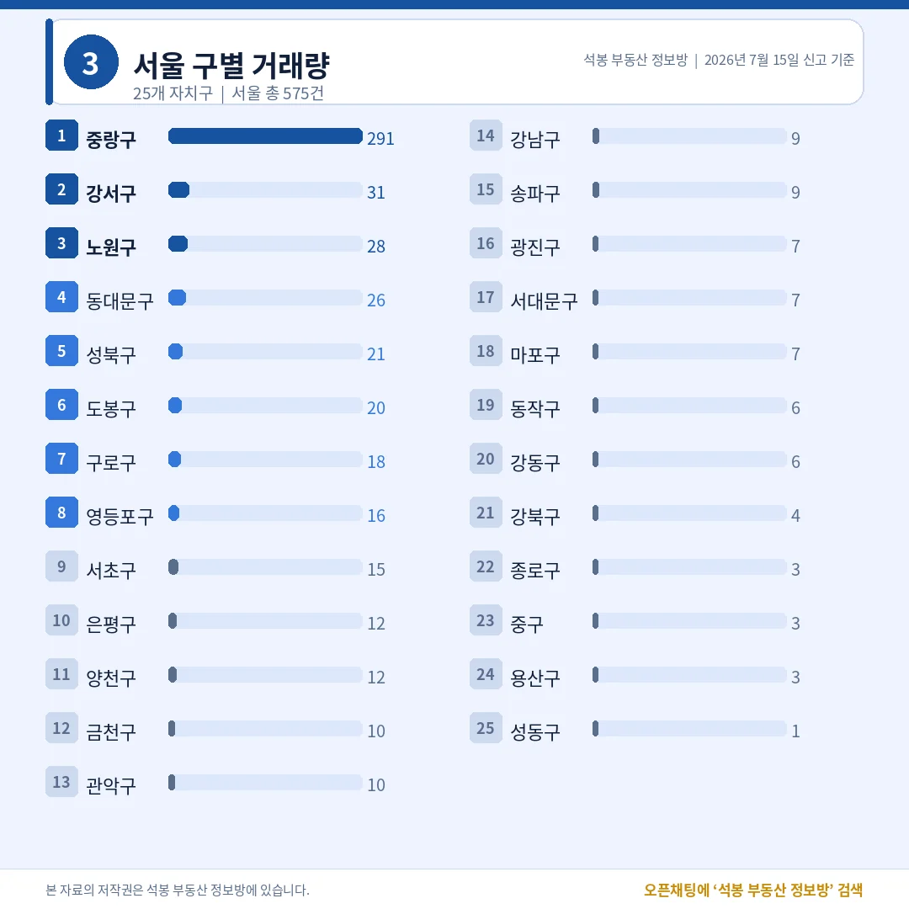
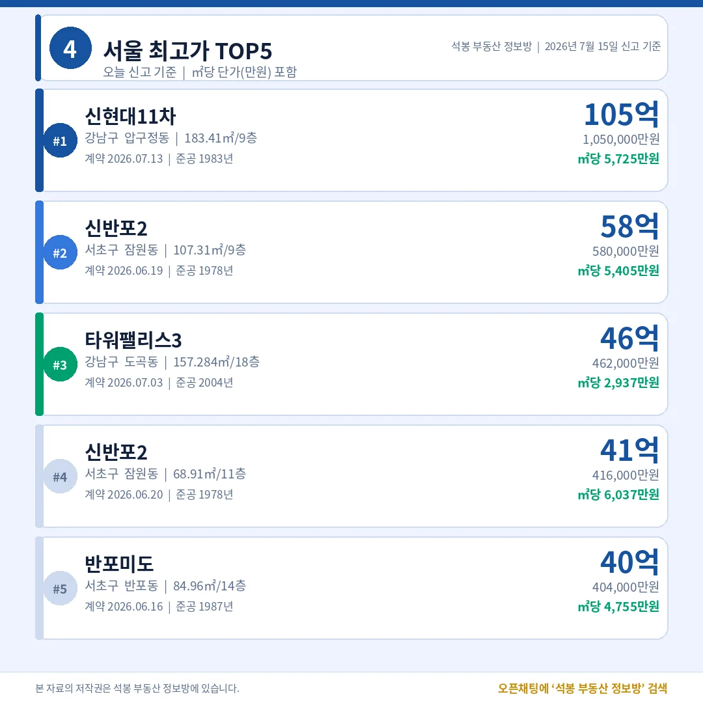
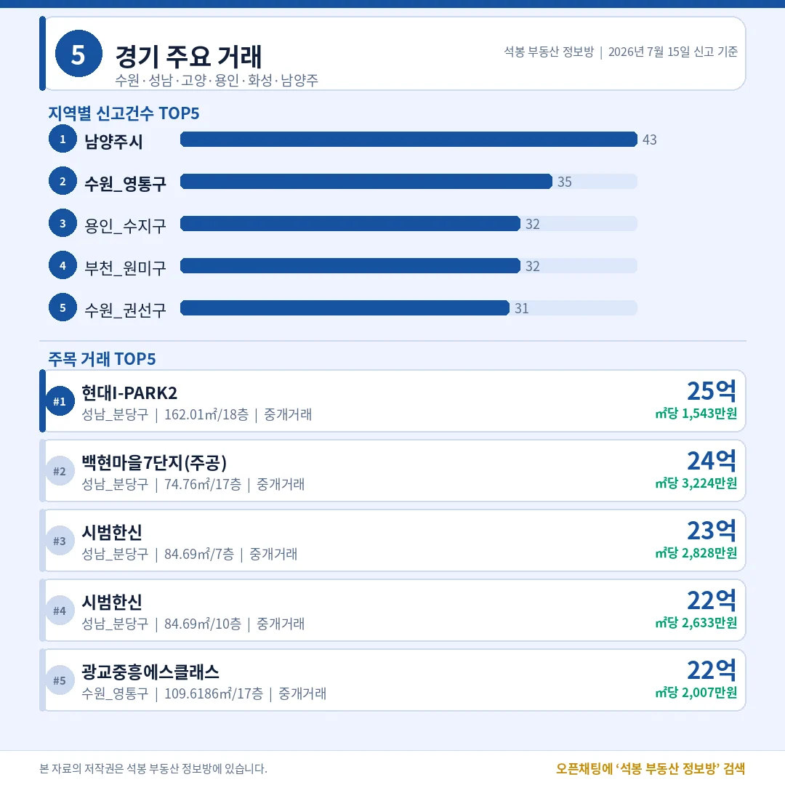
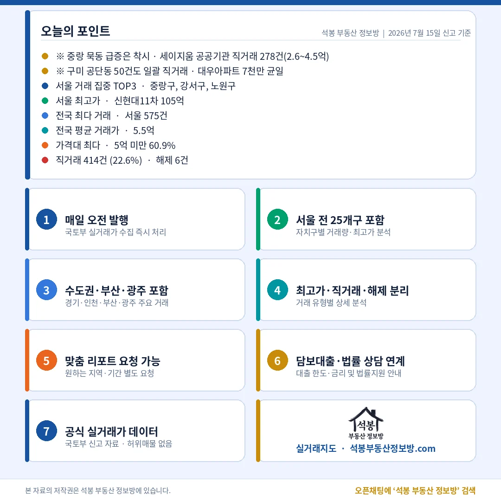

오늘 전국에서 아파트 1,834건이 실거래로 신고됐습니다. 서울 1위는 강남도 노원도 아닌 중랑구 291건 — 그런데 이 숫자, 그대로 믿으면 안 됩니다. 하루 만에 직거래 비중이 22.6%로 뛴 이유도 같은 곳에 있습니다. 오늘 신고분, 숫자 뒤의 사정까지 짚어 드립니다.
오늘 시장 한눈에 — 직거래 22.6%, 급증의 정체는

거래유형·가격대
전체 1,834건 가운데 중개거래가 1,420건(77.4%), 직거래(중개사 없이 당사자끼리 한 거래)가 414건(22.6%)이었습니다. 평소 몇 퍼센트에 그치던 직거래가 다섯 배 넘게 뛴 건데, 뜯어보면 이유가 있습니다. 서울 중랑구 묵동 세이지움에서 공공기관 직거래 278건(2.6~4.5억)이 하루에 일괄 신고됐고, 경북 구미 공단동에서도 대우아파트 50건이 7천만원 균일가로 한꺼번에 직거래 처리됐습니다. 두 건을 걷어내면 시장의 평소 모습과 크게 다르지 않습니다.
가격대별로는 5억 미만이 1,116건(60.9%)으로 몸통이었고, 5~10억이 480건(26.2%)으로 뒤를 이었습니다. 10억 초과는 다 합쳐 238건(13.0%), 20억 이상은 37건(2.0%)입니다. 해제·취소는 6건(0.3%)뿐 — 신고되는 거래 대부분이 실제 성사되는 진성 거래라는 뜻으로 읽힙니다.
여기서부터는 회원에게 보여드립니다
카카오 로그인 3초면 전문을 읽을 수 있습니다. 무료입니다.
가입하시면 지역 시장조사 보고서(약식)를 2회 무료로 요청하실 수 있습니다.
이미 회원이면 같은 버튼으로 로그인만 됩니다
어디서 거래됐나 — 서울 575건 1위, 중랑구 착시 걷어내면

서울 구별 거래량
시도별로는 서울이 575건으로 전국 1위, 경기 424건, 부산 116건, 인천 109건, 광주 81건 순이었습니다. 수도권(서울·경기·인천) 비중은 60.4% — 다만 서울 1위 자체가 묵동 일괄 신고의 영향이 큽니다.
서울 구별로는 중랑구가 291건으로 압도적 1위지만, 이 중 278건이 앞서 말한 세이지움 공공기관 직거래입니다. 이를 제외하고 보면 강서구 31건·노원구 28건·동대문구 26건이 실질적인 거래량 상위입니다. 강남구는 9건, 서초구는 15건에 그쳤죠. 오늘도 서울 시장을 움직인 건 강남이 아니라 중저가 실수요 지역이었다는 게 숫자로 확인됩니다.
오늘의 최고가 — 압구정 신현대11차 105억, 43년 된 아파트

서울 최고가 TOP5
오늘 서울 최고가는 강남구 압구정동 신현대11차 전용 183.41㎡, 105억이었습니다. 이어 서초구 잠원동 신반포2가 58억(107.31㎡)과 41억(68.91㎡)으로 두 건, 강남구 도곡동 타워팰리스3 46억, 서초구 반포동 반포미도 40억 순 — 다섯 건 모두 강남·서초입니다.
㎡당 단가를 보면 순위가 바뀝니다. 절대가격 1위 신현대11차(1983년 준공)는 ㎡당 5,725만원인데, 전용 68.91㎡짜리 신반포2(1978년 준공)가 ㎡당 6,037만원으로 단가 1위입니다. TOP5 중 네 건이 1970~80년대 준공 단지 — 오늘 강남·서초의 초고가는 새 아파트가 아니라 재건축(낡은 아파트를 헐고 새로 짓는 사업) 기대감이 만든 가격표였습니다.
수도권 밖은 어땠나 — 경기·인천·부산·광주

경기/인천/부산/광주
경기(424건)에서는 남양주 43건·수원 영통구 35건·용인 수지구 32건 순으로 신고가 많았고, 최고가는 성남 분당 현대I-PARK2 25억이었습니다. 백현마을7단지 24억, 시범한신 23억·22억 등 분당 노후 단지들이 20억대에 줄줄이 손바뀜한 점이 눈에 띕니다. 인천 109건·부산 116건·광주 81건의 지역별 상세는 카드로 정리했으니, 우리 동네가 어디쯤인지 확인해 보세요.
오늘의 인사이트

마무리(오늘의 포인트)
오늘 데이터의 교훈은 "숫자는 걷어내고 봐야 한다"입니다. 중랑구 291건과 직거래 22.6%는 세이지움 공공기관 일괄 신고가 만든 착시였고, 이를 제외한 시장의 실제 모습은 강서·노원 실수요 거래와 5억 미만 60.9%의 중저가 장세였습니다. 그 반대편에서 압구정 신현대11차 105억, 신반포2 ㎡당 6,037만원 등 강남·서초 재건축 단지들이 최고가 TOP5를 전부 채우며 거래량은 실수요, 가격은 재건축이라는 두 축을 오늘도 뚜렷이 보여줬습니다.
원자료: 국토교통부 실거래가 공개시스템(2026년 7월 15일 신고분) · 편집·제작: 석봉 부동산 정보방 · 본 자료는 정보 제공 목적이며 투자 권유가 아닙니다.